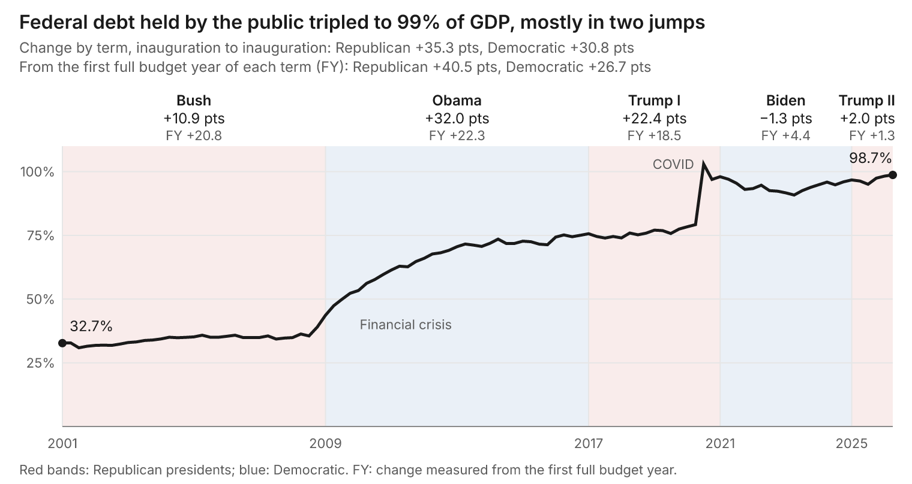
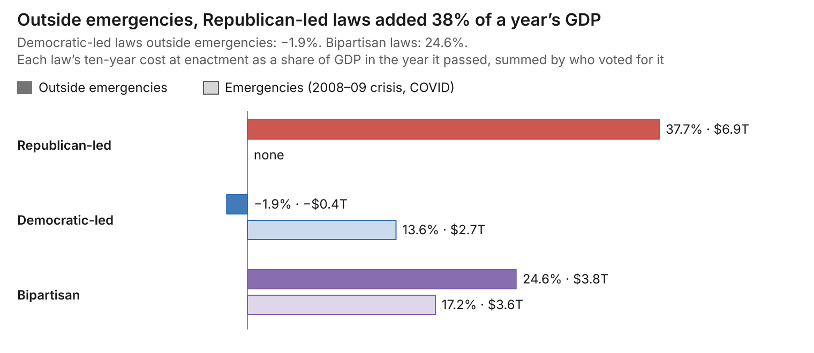
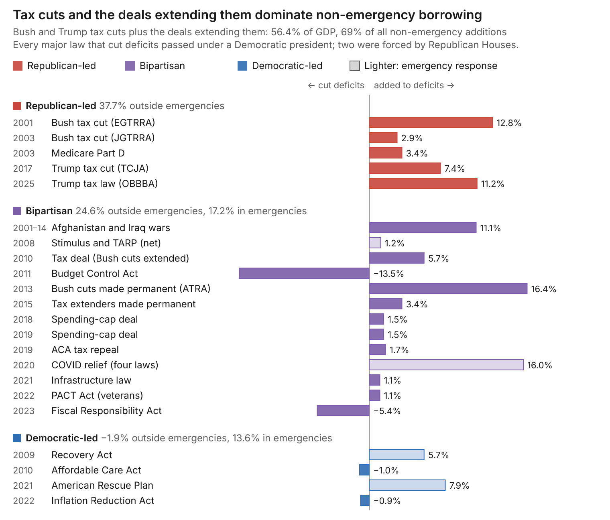
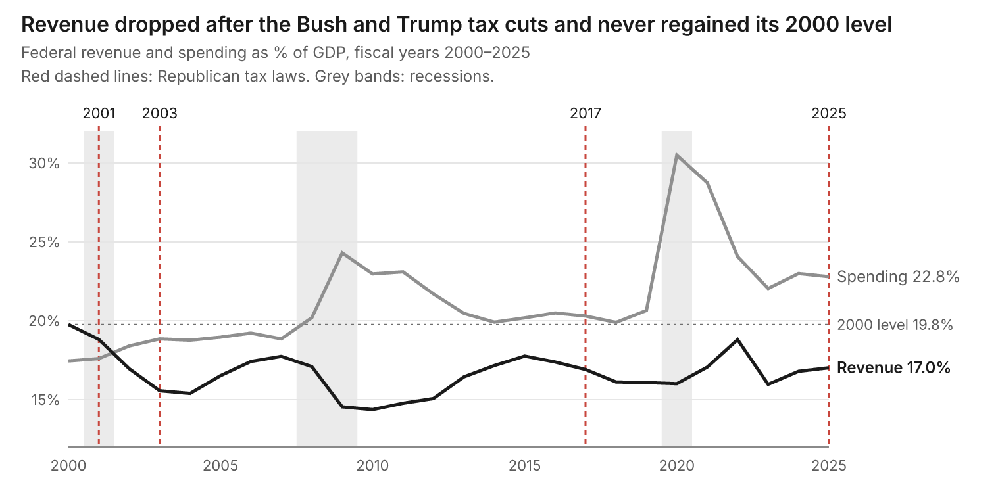
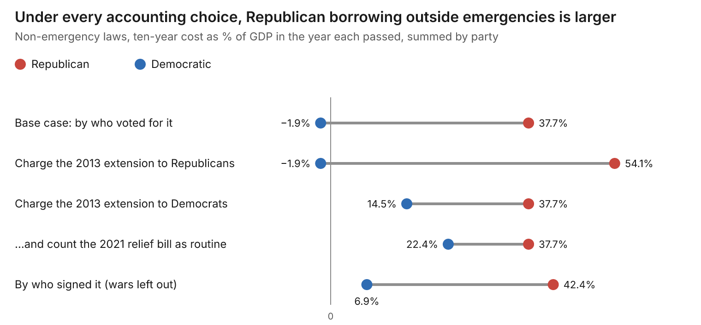

In January 2001, the Congressional Budget Office projected $5.6 trillion of surpluses for the decade ahead. Twenty-five years later, federal debt held by the public has tripled, to about 100% of GDP. The government just ran a $2.0 trillion deficit, 6.2% of GDP, in a year without a recession, and interest on the debt now costs more than the military.
The usual explanation is that both parties did this together. It is a comfortable story, and it is wrong where it matters. Count who sat in the White House and the two parties look roughly even. Count the laws they chose to pass, and the record is lopsided: the largest deliberate, unpaid, non-emergency additions to the debt since 2000 were written, passed and signed by Republicans.
The short version
- Three unpaid tax cuts did the most damage. The three are the Bush cuts of 2001–03, Trump's 2017 cut and Trump's 2025 law. With the unfunded Medicare drug benefit, they added about $6.9 trillion of borrowing over ten years, as estimated when they passed. That equals 38% of a year's GDP at the time. All passed mainly on Republican votes. Each time, growth failed to pay the bill.
- Two rare, catastrophic failures came on Republican watches. The 2008 collapse happened under Bush's regulators. The COVID response faltered under Trump. Through the 2008 crisis (2007–10), debt rose from 35% of GDP to 61%. Through COVID, it rose from 78% to 98% in 2020 alone. That is about 46 points of GDP across the two crises.
- Republican presidents started three unfunded wars. Bush launched Afghanistan in 2001 and Iraq in 2003 while cutting taxes. They were the first major American wars fought alongside tax cuts rather than tax increases. Congress spent about $1.6 trillion on them through 2014, roughly 11% of a year's GDP, and none of it was paid for. With veterans' care and interest, the bill runs near $8 trillion. Trump launched the third, against Iran, in 2026 without authorization from Congress. It has cost about $38 billion so far and is rising by about $3 billion a month.
- Republicans spent recklessly in good times. They cut taxes at very-low unemployment in 2017 and with deficits near 6% of GDP in 2025, so every crisis hit a more indebted country.
- Democrats' signature laws were paid for. Outside emergencies, laws passed mainly on Democratic votes were scored as slightly cutting deficits. Obamacare and Biden's Inflation Reduction Act both reduced deficits on paper.
- Democrats are not blameless. They made most of the Bush cuts permanent in 2013, ran an unpaid $1.9 trillion stimulus into a recovery (2021), and added $1.2 trillion by executive action. They failed to fill the hole. They did not dig most of it.
Every figure in the main text is documented, with sources, in the appendices.
By tenure, it may be close

Source: FRED series FYGFGDQ188S (OMB and St. Louis Fed), quarterly, Q4 2000 to Q1 2026.
Measured inauguration to inauguration, the debt-to-GDP ratio rose about 35 points under Republican presidents and 31 under Democrats. Start the clock at each president's first full budget year, the first year that runs on his own budget, and the gap widens to 40.5 points against 26.7.
By laws, it isn't close
To compare a 2001 law with a 2025 law, measure each one by its ten-year cost as estimated when it passed, then scale it to the size of the economy that year. A score of 10% means borrowing equal to a tenth of that year's GDP. Because each score uses a different year's GDP, adding them up shows the laws' relative size, not the rise in the debt ratio.
Then assign each law to the party whose votes passed it, or call it bipartisan when both parties gave it substantial support. Responses to the 2008 crisis and to COVID count separately as emergencies.

Source: Appendix A scorecard: CBO and JCT ten-year scores at enactment, divided by nominal GDP in each law's year.
Outside emergencies, laws passed mainly on Republican votes added 38% of a year's GDP. Laws passed mainly on Democratic votes cut deficits slightly. Most of the bipartisan total comes from extending the Bush tax cuts and from the wars Bush launched. The crisis borrowing of 2008 and 2020, counted separately, was bipartisan too.

Source: Appendix A scorecard: CBO and JCT ten-year scores at enactment, divided by nominal GDP in each law's year.
Read the bars top to bottom and the pattern is plain. The red Republican-led block at the top is almost all tax cuts. The purple bipartisan middle holds the deals that extended those cuts, the wars, the crisis responses and the two debt-ceiling deals that cut deficits. The blue Democratic-led block at the bottom is small, and half its laws cut deficits.
Four major laws cut deficits. All four passed under a Democratic president, and two of them, the debt-ceiling deals, were forced on that president by a Republican House. Among major laws, Republicans cut deficits only when a Democrat held the White House.
Three tax cuts, three broken promises
Every Republican government since 2000 has run the same play. Cut taxes, mostly at the top, without paying for it. Promise that growth will cover the cost. Leave the bill to whoever comes next.
George W. Bush inherited a surplus and cut taxes twice, in 2001 and 2003. Then he added a Medicare drug benefit with no funding at all.
Donald Trump inherited a steady expansion and cut taxes again in 2017, with unemployment near 4%. Even counting the growth it produced, CBO found the law added nearly $1.9 trillion over a decade; growth recovered only a fifth of the cost. In 2025, with deficits already near 6% of GDP, Republicans did it again, with a law CBO scored at $4.1 trillion including interest. Tariffs were sold as the offset, until the Supreme Court struck most of them down.
Neither version of the theory held. The cuts did not pay for themselves. Nor did the deficits they created "starve the beast," the idea that lost revenue would force Congress to cut spending. Spending kept rising while revenue fell. By the Center for American Progress's count, the Bush and Trump tax cuts explain 57% of the rise in the debt ratio since 2001. Set aside the two crisis responses, and they explain more than 90%.

Source: FRED series FYFRGDA188S and FYONGDA188S (OMB and St. Louis Fed), fiscal years 2000 to 2025.
After the Bush cuts, revenue fell to 15.4% of GDP by 2004. After Trump's, it sat near 16% in 2018 and 2019. Both times the economy was growing. Revenue has not regained its 2000 level since, while spending has climbed with an aging population and rising interest costs.
Wars on the credit card
World War II, Korea and Vietnam all brought tax increases. Afghanistan and Iraq were fought alongside tax cuts. Democrats share the votes to go to war, and Obama ran the Afghanistan surge. But the decision to fight two wars and cut taxes at the same time belongs to the Bush administration and its Republican Congress. Congress appropriated about $1.6 trillion for those wars through 2014, none of it paid for. Counting veterans' care and interest, the full bill runs near $8 trillion.
The third war is Trump's alone. He launched it against Iran in February 2026 without congressional authorization, and pressed on after the House voted to end it. CBO puts the Pentagon's cost at about $38 billion through August, rising by roughly $3 billion a month, with the energy shock adding about half a point to inflation.
Obamacare: one party paid, the other stripped the funding
The Affordable Care Act shows the difference in fiscal character most clearly. Democrats paid for their largest new program with taxes on high earners, fees on insurers and device makers, and Medicare savings. CBO scored it as cutting deficits by $143 billion in its first decade. Not one Republican voted for it.
Republicans then spent years trying to strip out its financing. Their 2017 repeal bill would have scrapped the high-earner taxes; it died in the Senate. In 2019 they did repeal $373 billion of the law's taxes. In that year-end deal, Democrats traded away the "Cadillac" tax on high-cost employer health plans, which unions hated. In 2025 they cut Medicaid.
Compare the Republicans' own health entitlement from 2003, the Medicare drug benefit known as Part D. It had no financing at all.
Two massive tail-risk failures on Republican watches
The federal government's first job is to protect the public from catastrophic tail risks: rare events that do enormous damage. It failed that test twice in twenty years, and both failures came on Republican watches.
The financial crisis grew under Bush's regulators. The bipartisan inquiry commission found it avoidable and put the main blame on regulators who failed to stop toxic mortgage lending. The deregulation that set the stage passed under Clinton with votes from both parties. But the bubble inflated, and the warnings were ignored, in the Bush years.
COVID arrived on Trump's watch. Obama had created a White House pandemic office after Ebola. In 2018 Trump's national security adviser folded it into a broader directorate and left its top post unfilled. When the virus came, the federal response faltered. The U.S. went on to suffer the highest excess death rate among large, wealthy countries over 2020–21, a failure that outlasted his term.
The borrowing that followed each crisis was bipartisan, and much of it was unavoidable. What was avoidable was the starting point -- and perhaps the crisis itself. Republicans had already spent the country's fiscal room in good times, so each crisis piled new debt on top of debt that need not have been there.
What Democrats own
Democrats are not innocent. In 2013 Obama signed the deal that made 82% of the Bush tax cuts permanent, a $2.8 trillion decision most House Democrats voted for. In 2021 Biden pushed through a $1.9 trillion relief bill, unpaid, into an economy that was already recovering. His executive actions, mostly student-loan relief, added another $1.2 trillion. And neither party has a plan for Social Security, Medicare or interest costs.
But look at the shape of it. Democrats extended tax cuts Republicans wrote, against an expiration date Republicans had built in. Their big unpaid bills were crisis responses. Their permanent programs came with financing. Count the 2021 relief bill as non-emergency spending and the Democratic total still comes to about $1.5 trillion, against $6.9 trillion for Republicans. Democrats failed to fill the hole. Republicans dug it.

Source: Appendix A scorecard, re-summed under each judgment call listed there.
Charge Democrats for making the Bush cuts permanent and for the 2021 relief bill, and the gap narrows to about 15 points of GDP. It never closes.
The Republican defense, and why it fails
Republicans have three serious answers. None changes the verdict.
"It's spending, not taxes." Spending is high, mostly because Social Security, Medicare and interest grow on autopilot under old laws. But revenue is where policy changed, and three Republican laws are why revenue sits below what an aging country needs. Conservative analysts argue the 2001–03 cuts explain only a small share of the early deficits. That analysis stops in 2011, before the cuts were made permanent and before two more rounds.
"Divided government worked." True: Republican Houses forced real deficit cuts on Democratic presidents in 2011 and 2023. But every time Republicans held the White House and both chambers, in 2001, 2003, 2017 and 2025, they cut taxes without paying for it. Their discipline appears only when Democrats hold the presidency.
"Americans aren't poorer." Median household income did hit a record in 2025. But the gains are lopsided, and the 2025 law makes them more so: CBO finds it takes about $1,200 a year from the poorest tenth of households and gives $13,600 to the richest tenth.
Verdict
Since 2000, the party that campaigns on fiscal discipline has been the main author of America's structural deficit, the gap between spending and revenue that persists even in good times. Three times it cut taxes without paying for them, each time promising growth would cover the cost, and each time CBO, and then the debt, proved otherwise. It fought two wars on borrowed money and started a third without asking Congress. It was in charge when both great tail-risk failures arrived, and it had already spent the fiscal room needed to absorb them.
Democrats share the blame for locking in most of the Bush cuts and for borrowing too much in 2021. But the fair headline is not that both parties did it. It is that one party dug most of the hole, and the other did too little to fill it.
Appendix A: The law-by-law scorecard
Outside emergencies, major laws passed mainly on Republican votes added about $6.9 trillion of ten-year borrowing at enactment. Democratic-led laws outside emergencies were scored as cutting deficits by about $0.4 trillion, and bipartisan laws added a net $3.8 trillion after the 2011 and 2023 deficit deals. Scaled to the GDP of the year each passed, that is roughly 38%, −2% and 25% of a year's output.
| Law | Year | Signed by | Coalition | Emergency | 10-yr cost ($B) | % of that year's GDP |
|---|---|---|---|---|---|---|
| 2001 tax cut (EGTRRA) | 2001 | Bush | Republican-led | No | 1,350 | 12.8 |
| 2003 tax cut (JGTRRA) | 2003 | Bush | Republican-led | No | 330 | 2.9 |
| Medicare Part D | 2003 | Bush | Republican-led | No | 395 | 3.4 |
| Afghanistan and Iraq, FY2001–14 | 2001–14 | Bush, Obama | Bipartisan | No | 1,600 | 11.1 |
| 2008 stimulus and TARP (net) | 2008 | Bush | Bipartisan | Yes | 183 | 1.2 |
| Recovery Act | 2009 | Obama | Democratic-led | Yes | 831 | 5.7 |
| Affordable Care Act | 2010 | Obama | Democratic-led | No | −143 | −1.0 |
| 2010 tax deal | 2010 | Obama | Bipartisan | No | 858 | 5.7 |
| Budget Control Act | 2011 | Obama | Bipartisan | No | −2,100 | −13.5 |
| Bush cuts made permanent (ATRA) | 2013 | Obama | Bipartisan | No | 2,776 | 16.4 |
| Tax extenders made permanent (PATH) | 2015 | Obama | Bipartisan | No | 622 | 3.4 |
| Tax Cuts and Jobs Act | 2017 | Trump | Republican-led | No | 1,456 | 7.4 |
| Bipartisan Budget Act (caps) | 2018 | Trump | Bipartisan | No | 320 | 1.5 |
| Bipartisan Budget Act (caps) | 2019 | Trump | Bipartisan | No | 320 | 1.5 |
| ACA tax repeal | 2019 | Trump | Bipartisan | No | 373 | 1.7 |
| COVID relief, four laws | 2020 | Trump | Bipartisan | Yes | 3,415 | 16.0 |
| American Rescue Plan | 2021 | Biden | Democratic-led | Yes | 1,860 | 7.9 |
| Infrastructure law | 2021 | Biden | Bipartisan | No | 256 | 1.1 |
| PACT Act (veterans' care) | 2022 | Biden | Bipartisan | No | 280 | 1.1 |
| Inflation Reduction Act | 2022 | Biden | Democratic-led | No | −238 | −0.9 |
| Fiscal Responsibility Act | 2023 | Biden | Bipartisan | No | −1,500 | −5.4 |
| One Big Beautiful Bill Act | 2025 | Trump | Republican-led | No | 3,400 | 11.2 |
| Coalition | Outside emergencies | Emergencies | Total |
|---|---|---|---|
| Republican-led | $6.9T (37.7%) | $0 | $6.9T (37.7%) |
| Democratic-led | −$0.4T (−1.9%) | $2.7T (13.6%) | $2.3T (11.7%) |
| Bipartisan | $3.8T (24.6%) | $3.6T (17.2%) | $7.4T (41.8%) |
Costs are ten-year CBO or JCT estimates at enactment, before interest, with four exceptions: war costs are appropriations through fiscal 2014 as tallied by CRS, ATRA is measured against letting the cuts expire, the BCA figure includes debt service, and the 2019 caps deal is counted at its two-year cap increase. Each cost is divided by nominal GDP in its enactment year (mid-period GDP for the wars), so the summed shares are an index of relative size, not a forecast of the debt ratio. "Republican-led" or "Democratic-led" means final passage relied mainly on that party's votes; "bipartisan" means substantial support from both.
Four judgment calls move the totals, and a reader should see each one.
- Who owns ATRA? Its $2.8 trillion exists only because the 2001 and 2003 cuts did; charge it to their authors and the Republican figure rises to about $9.7 trillion. But ATRA passed the House mainly on Democratic votes, and Obama had campaigned on making the cuts permanent for most earners. Charge it to Democrats and their figure becomes about $2.4 trillion. The table calls it bipartisan, which is what the Senate's 89–8 vote says.
- Was the American Rescue Plan an emergency? It passed during the pandemic, but into an economy that was already recovering. Count it as non-emergency and the Democratic figure rises from −$0.4 trillion to about $1.5 trillion (6.0% of GDP).
- Executive actions are left out for both sides. Biden's added about $1.2 trillion and Trump's first-term actions $13 billion (see Appendix B). In the other direction, CBO credited Trump's second-term tariffs with about $3.0 trillion of deficit reduction through 2035, much of it resting on the IEEPA authority the Supreme Court later struck down.
- Costs at enactment exclude interest and later re-estimates, which cut both ways. The 2017 and 2025 tax laws cost more once interest is counted, while later estimates put the IRA's clean-energy credits far above their original score.
CRFB's independent tally points the same way. It counts $8.4 trillion of new ten-year borrowing approved by Trump in his first term ($4.8 trillion excluding COVID relief), against $4.3 trillion by Biden through mid-2024 ($2.2 trillion excluding the American Rescue Plan). Its figures run higher than the table's because they include interest and score the caps deals as if the higher spending levels continue. By its count, 77% of Trump's total came through bipartisan bills, against 29% of Biden's.
Appendix B: The rest of the ledger
Not every large law since 2000 fits the tax-cut pattern, and the rest of the record cuts both ways.
Democratic-led, passed mainly on Democratic votes
- Recovery Act (2009). $787 billion at passage, later revised to $831 billion; no House Republican and three Senate Republicans voted yes. It was enacted into the worst downturn since the 1930s.
- American Rescue Plan (2021). About $1.9 trillion, unpaid, with no Republican votes. Unlike the 2020 relief bills, it landed in an economy that was already recovering, and economists in both parties argue it fed the 2021–22 inflation.
- Inflation Reduction Act (2022). Scored by CBO as cutting deficits by $238 billion. Later estimates put its clean-energy credits well above their original score.
- Executive actions. CRFB counts $1.2 trillion of added ten-year debt from Biden's executive actions, led by $620 billion of student-loan relief, some of it later blocked in court. Trump's first-term actions netted $13 billion, because tariff revenue offset their cost.
Bipartisan
- 2010 tax deal. A two-year extension of all the Bush cuts plus a payroll-tax holiday, about $858 billion, signed by Obama.
- Budget Control Act (2011). At least $2.1 trillion of deficit reduction including interest savings, forced by House Republicans in a debt-ceiling standoff and signed by Obama. It is the largest deficit-reduction law of the period.
- American Taxpayer Relief Act (January 2013). Made 82% of the Bush tax cuts permanent, about $2.8 trillion over ten years compared with letting them expire. It passed the Senate 89–8. In the House, 172 Democrats and 85 Republicans voted yes, and 151 Republicans voted no, many because it let rates rise at the top.
- Tax extenders (2015). The PATH Act made a long list of expiring business breaks permanent, about $622 billion.
- Spending-cap deals (2018 and 2019). Two Trump-signed laws lifted the 2011 caps. CBO scored the first at $320 billion, and the second raised caps by a similar amount.
- COVID relief (2020). Four laws totaling $3.4 trillion, led by the CARES Act at $1.9 trillion, which passed the Senate 96–0.
- Infrastructure (2021) and veterans' care (2022). The infrastructure law added $256 billion and the PACT Act about $280 billion of direct spending, both signed by Biden with sizable Republican support. Counting related discretionary spending and interest, CRFB puts PACT at $520 billion.
- Fiscal Responsibility Act (2023). About $1.5 trillion of deficit reduction, extracted by House Republicans in another debt-ceiling standoff. It passed the House 314–117.
Appendix C: Evidence notes
Opening figures
- CBO's January 2001 outlook projected a cumulative $5.6 trillion surplus for 2002–2011.
- Debt held by the public was 32.7% of GDP in Q4 2000 and 98.7% in Q1 2026 on FRED's quarterly series; CBO's fiscal-year measure puts 2026 at 101%, rising to 120% in 2036.
- Fiscal 2026 closed with a $2.0 trillion deficit, 6.2% of GDP: $7.4 trillion of spending, $5.4 trillion of revenue. CRFB ranks it as the largest outside a major war or recession.
- Net interest hit a record $970 billion in fiscal 2025 and now exceeds defense spending.
Tax cuts
- The 2001 and 2003 laws cost about $1.35 trillion and $330 billion over eleven years each, written to expire to fit reconciliation rules. The 2001 law drew some Democratic votes; the 2003 law passed the Senate on Vice President Cheney's tiebreak.
- With extensions, the Bush cuts cost more than $8 trillion through fiscal 2023, and the Bush and Trump cuts together about $10 trillion. Bobby Kogan of CAP attributes 57% of the debt-ratio rise since 2001 to them, over 90% excluding crisis responses.
- Medicare Part D: CBO scored $395 billion for 2004–2013, with no offsets. It passed the House 220–215 after the vote was held open for hours. Democrats had proposed a costlier benefit, and Part D has run below early projections.
- 2017 tax law: about $1.5 trillion before interest, and nearly $1.9 trillion over 2018–2028 after interest and growth effects; growth offset about 20%. No Democrat voted for it.
- 2025 law: CBO scored $3.4 trillion over 2025–2034, or $4.1 trillion with debt service. It passed the Senate 51–50 on Vice President Vance's vote and the House 218–214. CBO credited new tariffs with about $3.0 trillion of deficit reduction through 2035; the Supreme Court struck down the IEEPA tariffs 6–3 on February 20, 2026, with potential refunds of up to about $170 billion.
- Spending is 23.3% of GDP in 2026 and revenue 17.5%.
- On FRED's fiscal-year series, revenue was 19.8% of GDP in 2000, 15.4% in 2004, 16.1% in 2018 and 17.0% in 2025; spending was 17.5% in 2000 and 22.8% in 2025. FRED divides by calendar-year GDP, so its ratios run slightly below CBO's.
Wars
- On the 2002 Iraq authorization, 81 House Democrats and 29 Senate Democrats voted yes.
- Congress appropriated about $1.6 trillion for Afghanistan and Iraq through fiscal 2014. Brown University's Costs of War project puts the full post-9/11 burden, including veterans' care and interest, at about $8 trillion.
- The Iran war began on February 28, 2026 as Operation Epic Fury. The House passed a war powers resolution 215–208 on June 3; the Senate has not acted. CBO estimates $38 billion through August 1, rising about $3 billion a month, about half a point of added inflation into early 2027, and at least five years to rebuild interceptor stocks.
Obamacare
- CBO scored the final package as cutting deficits by $143 billion over 2010–2019.
- The 2017 House repeal bill would have repealed the 3.8% investment-income tax ($157.6 billion) and the 0.9% Medicare surtax ($117.3 billion) per JCT.
- The December 2019 repeal: Cadillac tax $197 billion, device tax $25.5 billion, insurer tax $150.8 billion, $373 billion in all. Cadillac-tax repeal was backed by unions and many Democrats.
- The 2017 tax law zeroed the individual-mandate penalty on party lines; CBO expected lower federal spending and more uninsured people.
The two crises
- The Financial Crisis Inquiry Commission found the crisis avoidable, blaming failures of regulation and supervision, above all the Fed's failure to stem toxic mortgages. Its six Democratic appointees signed; the four Republican appointees dissented.
- Gramm–Leach–Bliley (1999) and the Commodity Futures Modernization Act (2000) had Republican authors, bipartisan majorities and Clinton's signature. Fed chair Alan Greenspan was reappointed by presidents of both parties.
- TARP's final net cost was $31 billion.
- In May 2018, John Bolton folded the NSC's global health security office into a counterproliferation and biodefense directorate, and its senior director was not replaced. Its former head says the move left an unclear structure; the official who ran the merged office calls it a consolidation.
- Excess mortality over 2020–21 was 283 per 100,000 in the U.S., 21% above Germany, the next highest peer; the U.S. rate was 141 in 2020 and 142 in 2021.
- 2020 COVID relief totaled $3.4 trillion across four laws; the CARES Act passed the Senate 96–0. Debt rose across rich countries: Canada's gross debt ratio rose 24.9 points from 2019 to 2021.
- On FRED's quarterly series, debt held by the public rose from 34.9% of GDP in Q4 2007 to 61.4% in Q4 2010, and from 78.4% in Q4 2019 to 98.0% in Q4 2020.
The defense
- Brian Riedl found the 2001 and 2003 cuts explained 14% of the 2002–2011 swing from projected surplus to deficit.
- The deficit fell from 9.8% of GDP in fiscal 2009 to 2.5% in fiscal 2015, helped by the 2011 Budget Control Act.
- Real median household income was a record $87,460 in 2025, up 2.6%. Income at the 10th percentile was flat, while the 90th percentile rose for a third straight year.
- CBO's distributional analysis of the 2025 law: the bottom tenth of households loses about $1,200 a year (3.1% of income); the top tenth gains $13,600 (2.7%).
- On the 2013 tax deal, 172 House Democrats and 85 Republicans voted yes; 151 Republicans voted no.
References
Government and official sources
- Congressional Budget Office, The Budget and Economic Outlook: 2026 to 2036
- Congressional Budget Office, Testimony on the Budget and Economic Outlook: 2026 to 2036
- Phillip Swagel, CBO Director, testimony to the Senate Finance Committee, March 11, 2026
- Congressional Budget Office, Estimated Budgetary Effects of Public Law 119-21
- Congressional Budget Office, Effects on Deficits and the Debt of Public Law 119-21
- Congressional Budget Office, Analysis of the 2011 Debt Ceiling Agreement
- Congressional Budget Office, Final Report on the Troubled Asset Relief Program
- Congressional Budget Office, Monthly Budget Review: Summary for Fiscal Year 2015
- Congressional Research Service, Expiration and Extension of the 2001–2008 Tax Cuts
- Congressional Research Service via FAS, Post-9/11 War Costs
- Federal Reserve Bank of St. Louis, Federal Debt Held by the Public as Percent of GDP (FRED)
- Federal Reserve Bank of St. Louis, Federal Receipts as Percent of GDP (FRED)
- Federal Reserve Bank of St. Louis, Federal Net Outlays as Percent of GDP (FRED)
- Financial Crisis Inquiry Commission, Conclusions
- U.S. Census Bureau, Median Household Income in 2025 Surpassed Previous Highs
Budget and policy analysis
- American Action Forum, CBO: FY 2026 Budget Deficit Totaled $2 Trillion
- Brown University Costs of War Project, U.S. Federal Budget
- Center for American Progress (Bobby Kogan), Tax Cuts Are Primarily Responsible for the Increasing Debt Ratio
- Center on Budget and Policy Priorities, Budget Deal Makes Permanent 82 Percent of President Bush's Tax Cuts
- Committee for a Responsible Federal Budget, CBO Estimates $2.0 Trillion Deficit for Fiscal Year 2026
- Committee for a Responsible Federal Budget, CBO Estimates $2.0 Trillion Deficit for First 11 Months of FY 2026
- Committee for a Responsible Federal Budget, CBO Releases February 2026 Budget and Economic Outlook
- Committee for a Responsible Federal Budget, Trump and Biden: The National Debt
- Committee for a Responsible Federal Budget, Trump and Biden: Executive Actions
- Committee for a Responsible Federal Budget, Trump and Biden: Partisan Breakdown of New Debt
- Committee for a Responsible Federal Budget, CBO Finds Budget Deal Will Cost $320 Billion
- Committee for a Responsible Federal Budget, Breaking Down $3.4 Trillion in COVID Relief
- Committee for a Responsible Federal Budget, CBO Scores IRA With $238 Billion of Deficit Reduction
- EY Global Tax News, US Supreme Court Rules IEEPA Does Not Authorize Presidents to Impose Tariffs
- Fraser Institute, The Accumulated Debt and Economic Performance of Industrialized Countries during COVID
- Heritage Foundation (Brian Riedl), The Three Biggest Myths About Tax Cuts and the Budget Deficit
- Peterson-KFF Health System Tracker, Premature Mortality During COVID-19 in the U.S. and Peer Countries
- Steptoe, Overview of Key Tax Provisions in the Affordable Care Act Repeal
- Tax Policy Center, Repealing the ACA's Excise Taxes
News and fact-checks
- ABC News 4, CBO: Bipartisan Infrastructure Deal Would Add $256B to Deficit
- Al-Monitor, Iran War Cost Hits $38 Billion, Forecast to Rise $3 Billion a Month, CBO Says
- Axios, Trump vs. Biden Debt Math
- Becker's Hospital Review, Congress Approves $1.4T Spending Deal That Repeals ACA Taxes
- Calculated Risk, Tax Bill to Add $857 Billion to Debt
- Deseret News, CBO on Iran War Munitions and Interceptors
- FactCheck.org, CBO Didn't Say Tax Cuts Were 'Virtually Paid For'
- FactCheck.org, Dems Misconstrue Trump Budget Remarks
- NBC News, Financial Crisis Was Avoidable, Inquiry Finds
- NPR, House Passes War Powers Resolution Directing Trump to End Hostilities With Iran
- NYSSCPA, The 2015 Business Extender Law
- OPB/NPR, House Approves the Biden-McCarthy Debt Ceiling Bill
- PolitiFact, Obamacare Law Was Funded and Expected to Save Billions
- Thomson Reuters Tax, CBO Analyzes Distributional Effects of Budget Act
- WHYY, Cliff Notes: Is George W. Bush Smiling?
- Wikipedia, American Recovery and Reinvestment Act of 2009
- Wikipedia, Authorization for Use of Military Force Against Iraq Resolution of 2002
Comments